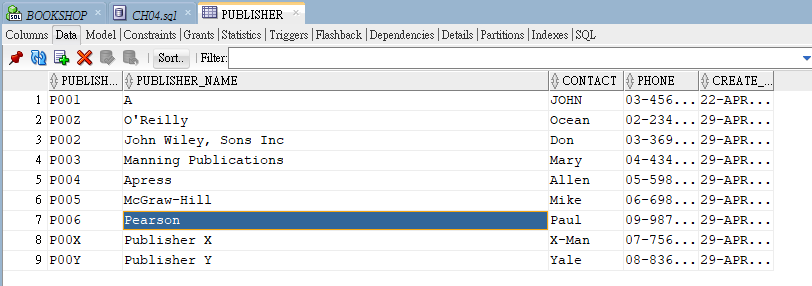

目錄
1. 插入資料(無日期)
插入資料
INSERT INTO [TableName]([TableCol],[TableCol],...)- 值若是
'O''Reilly'則建立後變成O'Reilly
-- INSERT INTO PUBLISHER INSERT INTO PUBLISHER (PUBLISHER_ID, PUBLISHER_NAME, CONTACT, PHONE) VALUES ('P001', 'O''Reilly', 'Ocean' , '02-23456789'); INSERT INTO PUBLISHER (PUBLISHER_ID, PUBLISHER_NAME, CONTACT, PHONE) VALUES ('P002', 'John Wiley, Sons Inc', 'Don' , '03-36962869'); INSERT INTO PUBLISHER (PUBLISHER_ID, PUBLISHER_NAME, CONTACT, PHONE) VALUES ('P003', 'Manning Publications', 'Mary' , '04-43456789'); INSERT INTO PUBLISHER (PUBLISHER_ID, PUBLISHER_NAME, CONTACT, PHONE) VALUES ('P004', 'Apress', 'Allen' , '05-59876543'); INSERT INTO PUBLISHER (PUBLISHER_ID, PUBLISHER_NAME, CONTACT, PHONE) VALUES ('P005', 'McGraw-Hill', 'Mike' , '06-69876543'); INSERT INTO PUBLISHER (PUBLISHER_ID, PUBLISHER_NAME, CONTACT, PHONE) VALUES ('P006', 'Pearson', 'Paul' , '09-98767867'); INSERT INTO PUBLISHER (PUBLISHER_ID, PUBLISHER_NAME, CONTACT, PHONE) VALUES ('P00X', 'Publisher X', 'X-Man' , '07-75698765'); INSERT INTO PUBLISHER (PUBLISHER_ID, PUBLISHER_NAME, CONTACT, PHONE) VALUES ('P00Y', 'Publisher Y', 'Yale' , '08-83698765');
PUBLISHER_ID PUBLISHER_NAME CONTACT PHONE P001 O'Reilly Ocean 02-23456789 P002 John Wiley, Sons Inc Sons Inc Don P003 Manning Publications Mary 04-43456789 P004 Apress Allen 05-59876543 P005 McGraw-Hill Mike 06-69876543 P006 Pearson Paul 09-98767867 P00X Publisher X X-Man 07-75698765 P00Y Publisher Y Yale 08-83698765 - 值若是
2. 插入資料(含日期格式)
填日期時需用 to_date() 做日期轉換，例:
to_date('2005-02-19 21:02:44', 'yyyy-mm-dd hh24:mi:ss')[1]yyyy-mm-dd表示年-月-日轉換hh24:mi:ss表示時:分:秒轉換
-- INSERT INTO BOOK -- to_date(): 將指定格式日期/時間字串轉成DATE格式 -- DATE：to_date('2005-02-19', 'yyyy-mm-dd') -- TIMESTAMP：to_date('2005-02-19 21:02:44', 'yyyy-mm-dd hh24:mi:ss') INSERT INTO BOOK (ISBN, BOOK_NAME, PRICE, AUTHOR, PUBLICATION_DATE, PUBLISHER_ID) VALUES('9780596009205', 'Head First Java', 1186 , 'Kathy Sierra and Bert Bates', to_date('2005-02-19', 'yyyy-mm-dd'), 'P001');
3. 設定統一日期格式
設定後連線期間(SESSION)就不用單獨套用格式，用法:
ALTER SESSION SET(以下格式則一套用)-- 更改NLS_DATE_FORMATNLS_DATE_FORMAT, NLS_TIMESTAMP_FORMAT格式有2個好處 -- 1. 在資料庫連線期間新增時無需使用to_date()轉換 -- 2. 查詢結果顯示的日期/時間格式也同時確定
ALTER SESSION SET NLS_DATE_FORMAT = 'yyyy-mm-dd';ALTER SESSION SET NLS_TIMESTAMP_FORMAT = 'yyyy-mm-dd hh24:mi:ss';
4. 自動編號
常用在 PK[2] 上，多用在訂單編號
建立序號格式
CREATE SEQUENCE SEQ_EMPLOYEE_ID;Name Value CREATED 2020-04-29 LAST_DDL_TIME 2020-04-29 SEQUENCE_OWNER BOOKSHOP SEQUENCE_NAME SEQ_EMPLOYEE_ID MIN_VALUE 1 MAX_VALUE 9999999999999999999999999999 INCREMENT_BY 1 CYCLE_FLAG N ORDER_FLAG N CACHE_SIZE 20 LAST_NUMBER 21 套用序號格式並新增資料
-- 即使新增失敗，sequence仍會自動跳號，避免多人新增時無法順利取號的問題 -- 新增失敗的話照樣會新增失敗，直到新的執行可以執行成功就會將資料加入 INSERT INTO EMPLOYEE (EMPLOYEE_ID, NAME) VALUES (SEQ_EMPLOYEE_ID.nextval, 'John');查詢目前編到的號碼
-- 查詢目前自動編號(sequence)的值 SELECT SEQ_EMPLOYEE_ID.currval FROM dual;
6. COMMIT 與 ROLLBACK
COMMIT[3]
在 Oracle 提交此次修改信息，沒下 commit 則指令後的效果沒有真正被保存(相當於 excel 編輯後沒有
ctrl + s檔案)commitdata，這時就可以使用 ROLLBACK 回退資料使用方法
COMMIT;
ROLLBACK[5]
撤回未提交(保存)的資料
使用方法
ROLLBACK;
7. 自動序號格式
介面化建立

指令自動建立

8. 資料鎖定
資料表在有人編輯時此筆資料會被鎖定[6]，此時其他人員不可修改(但此表的其他資料仍可被修改)
